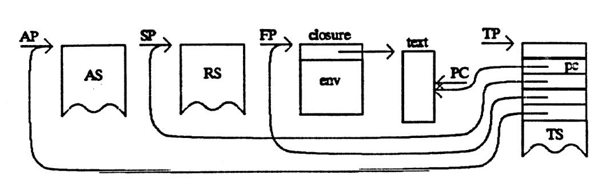

A virtual machine is a program that acts like a computer.
It simulates the instructions of a processor along with a few other hardware components, allowing it to perform arithmetic, read and write to memory, and interact with I/O devices, just like a physical computer. Most importantly, it can understand a machine language which you can use to program it.
Virtual machines provide an intermediate language stage for compilation. They bridge the gap between the high level of a programming language and the low level of a real machine. The instructions of an abstract machine are tailored to the particular operations required to implement operations of a specific source language or class of source languages.

A bedrock abstraction level is found in every human system. No recoverable failure, no matter how catastrophic, will ever demand intelligent intervention below it. When an application crashes, it might leave behind a core dump but never a "logic gate dump" and certainly not a "transistor dump." Logic gates and transistors lie well below the bedrock abstraction level of any ordinary computer. ~
Virtual Machines
Here is a list of virtual machines designed with the explicit goal of challenging bit rot and host a suite of personal software.
| Bedrock | 8-bit, Stack | 64kb of memory, 16 devices, two 256-byte stacks, 32 opcodes | |
|---|---|---|---|
| Laki | 8-bit, Stack | 64kb of memory, 16 devices, two wrapping 256-byte stacks, 32 opcodes | |
| Tny | 8-bit, Stack | 256 bytes RAM, 16×16 screen | |
| tr8vm | 8-bit, Register | 64Kb memory, 128 x 128 pixels 16 colors | |
| Xyw | 8-bit, Stack | 64Kb, two stacks, 32 opcodes | |
| Z80 | 8-bit, Register | CollapseOS | 64Kb memory, 14 registers, 158 instructions |
| 6502 | 8-bit, Register | Minicube64 | 64Kb memory, 3 registers, 56 instructions |
| Chip8 | 16-bit, Register | Octo | 4Kb memory, 16 registers, 64×32 display |
| Chip16 | 16-bit, Register | 4Kb memory, 16 registers, 128x128 display | |
| Subleq | 16-bit, OISC | Eternal | 1 opcode |
| Ilo | 32-bit, Stack | 64Kb of memory, 8 devices, two stacks, 30 opcodes | |
| ok | 32-bit, Stack | 16 opcodes | |
| Subsky | 32-bit, Register | 16 opcodes and 16 operands | |
| Cuneiform | 32-bit, Register | Cuneiforth | 15 opcodes |